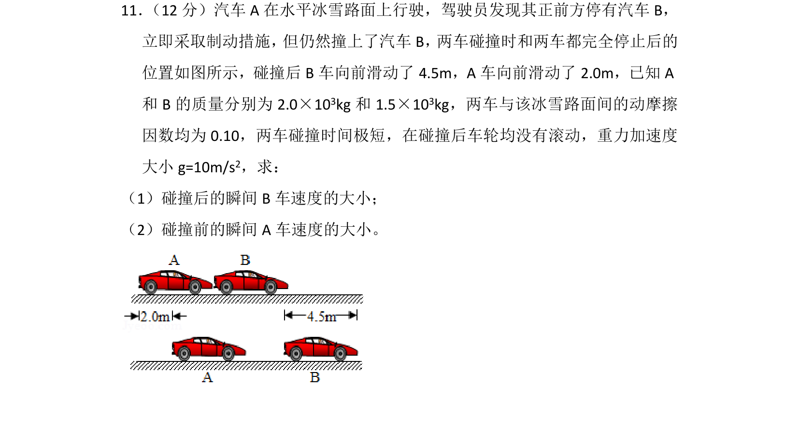
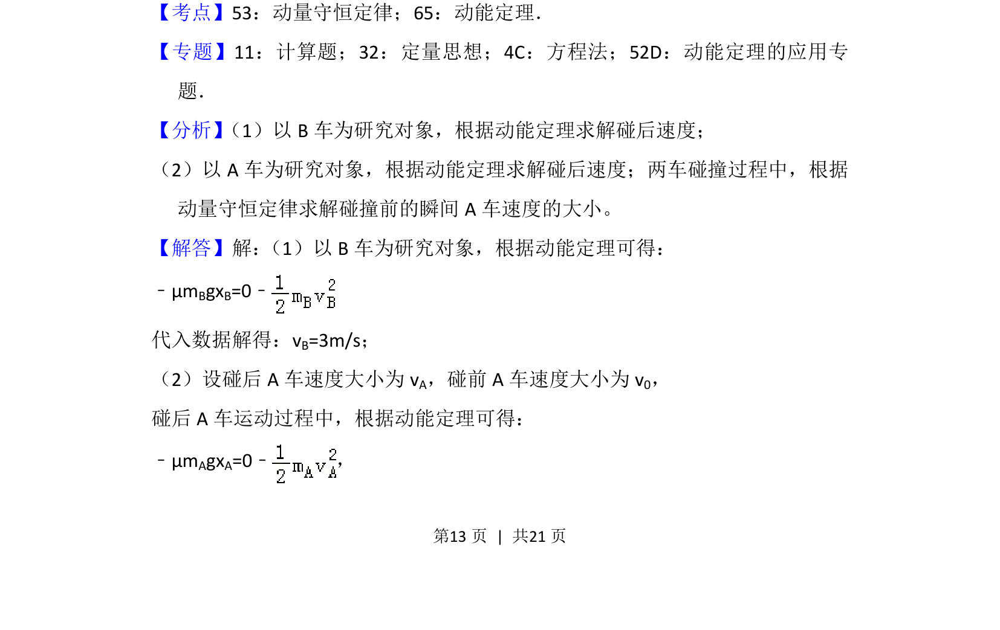
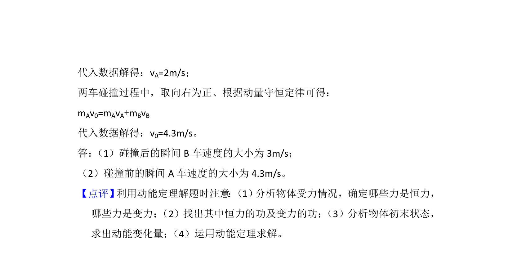

考点：动量守恒定律 动能定理

两车碰撞后滑行距离求碰后速度，再结合动量守恒求碰前速度。


📄 原 PDF 第 13 页：
素材/真题/吉林/2008-2024·（吉林）物理高考真题/2018年高考物理试卷（新课标Ⅱ）（解析卷）.pdf
11． （12分）汽车A在水平冰雪路面上行驶，驾驶员发现其正前方停有汽车B， 立即采取制动措施， 但仍然撞上了汽车B， 两车碰撞时和两车都完全停止后的 位置如图所示，碰撞后B车向前滑动了4.5m，A车向前滑动了2.0m，已知A 和B的质量分别为2.0×10 3kg和1.5×10 3kg，两车与该冰雪路面间的动摩擦 因数均为0.10，两车碰撞时间极短，在碰撞后车轮均没有滚动，重力加速度 大小g=10m/s 2，求： （1）碰撞后的瞬间B车速度的大小； （2）碰撞前的瞬间A车速度的大小。
【考点】53：动量守恒定律；65：动能定理．菁优网版权所有 【专题】11：计算题；32：定量思想；4C：方程法；52D：动能定理的应用专 题． 【分析】 （1）以B车为研究对象，根据动能定理求解碰后速度； （2）以A车为研究对象，根据动能定理求解碰后速度；两车碰撞过程中，根据 动量守恒定律求解碰撞前的瞬间A车速度的大小。 【解答】解： （1）以B车为研究对象，根据动能定理可得： ﹣μmBgxB=0﹣ 代入数据解得：vB=3m/s； （2）设碰后A车速度大小为v A，碰前A车速度大小为v 0， 碰后A车运动过程中，根据动能定理可得： ﹣μmAgxA=0﹣，